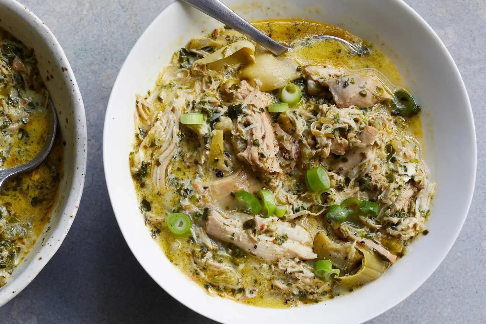

Creamy Spinach-Artichoke Chicken Stew
Courtesy of The New York Times

This creamy chicken stew is spinach-artichoke dip reimagined as a simple
stovetop braise. It comes together quickly, thanks to frozen spinach and
jarred artichoke hearts, though if you have time, there is also a
slow-cooker version of this recipe. Fresh dill and scallions are added
just before serving, and provide bright, herbal flavor that offsets the
richness of the finished dish.
Ingredients
- 2 tablespoons unsalted butter
- 1 large yellow or red onion, finely chopped
- Kosher salt and black pepper
- 3 celery stalks, chopped
- 8 garlic cloves, smashed and chopped
- 2 cups chicken stock
- ¾ cup white wine
- 2 to 2¼ pounds boneless, skinless chicken thighs
- ½ lemon, juiced (about 1½ tablespoons)
- 1 teaspoon red-pepper flakes
- 1 (10-ounce) package frozen cut spinach
-
1 (12-ounce) jar marinated artichoke hearts, drained (about 1 heaping
cup artichoke hearts)
- ½ cup cream cheese (about 4 ounces)
- ½ cup finely chopped fresh dill
- 4 to 6 scallions, thinly sliced, for topping
- Grated Parmesan cheese, for topping
Instructions
-
In a large Dutch oven over medium-high heat, melt the butter. Add the
onion, season lightly with salt, and cook, stirring occasionally, until
softened and translucent, about 5 minutes. Add the celery and cook,
stirring, until softened, about 5 minutes, adjusting the heat as
necessary to avoid scorching. Stir in the garlic.
-
Pour in the stock and wine, and bring to a bubble. Add the chicken
thighs, lemon juice and red-pepper flakes; season with 1 teaspoon salt
and a generous amount of pepper. Mix well to combine all the ingredients
and bring to a boil.
-
Reduce the heat to maintain a low simmer and simmer, uncovered, for 20
minutes.
-
Add the frozen spinach and the artichoke hearts to the pot. Increase the
heat to medium-high and cook, stirring to help the spinach defrost and
wilt into the stew. When the spinach is warm and evenly distributed,
reduce the heat and simmer until the chicken is tender and the flavors
are blended, another 10 to 15 minutes.
-
Add the cream cheese in dollops, stirring to melt it into the soup. Add
the dill. Using two forks, coarsely break or shred the chicken into
large chunks. Taste and add more salt and black pepper if necessary.
- Divide the stew among bowls, and top with scallions and Parmesan.
Home